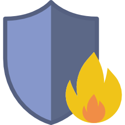
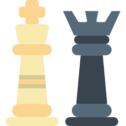
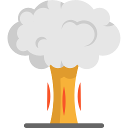

L'activité opérationnelle
-
 Le secourismeau sein des services d’incendie et de secours
Le secourismeau sein des services d’incendie et de secours -
La prévention
-
L’incendieet les liquides inflammables
-
 La défense extérieurecontre l’incendie
La défense extérieurecontre l’incendie -
Les notions de chimie théoriques
-
Le risque chimiqueadapté aux sapeurs-pompiers
-
Le traitement de l’alerteet le suivi des interventions
-
Les systèmes d’informationet de communication (SIC)
-
La gestion opérationnelleet le commandement
-
Le commandement et ladirection des opérations de secours
-
 Le dispositif ORSECet les plans d’urgence
Le dispositif ORSECet les plans d’urgence -
La gestion des crises majeureset les plans de défense
-
Les plans divers
-
Les dispositifs particuliers
-
Les interventions particulières
-
Les équipementsde protection individuelle et les équipements de secours